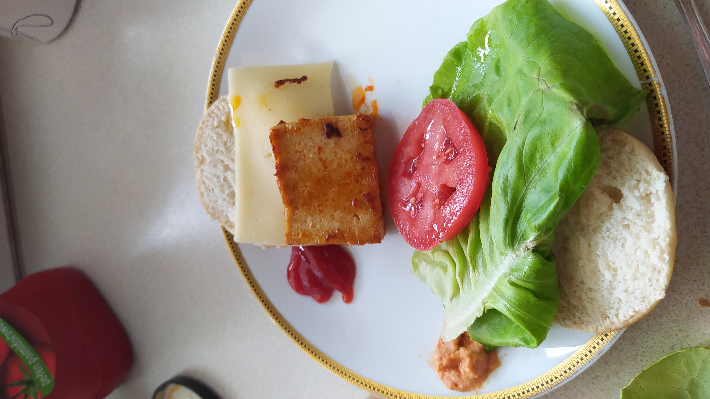

Tofu mini-burgers are perfect meal for fast and taste vege brekfest. The meal is very customable you can change extras like salad, tofu marinate, type of cheese and souce. You can assemble whole meal in short time and after meal you have only frying pan to clean up. This is a basic version with hummus and chilli tofu marinate.

Mix oliv oil with spices to create a marinate
Cut the tofu lengthwise into 1cm pieces, and put them into marinate for at least 10 min
Cut the tomatoe into slices
When tofu will be marinate, put sliced in half bun into oven (180 Celcius)
Fry tofu in a hot pan 2 minuts each side
Take bun from the oven and brush bottom with 1 teaspoon of hummus and upper side with ketchup
Put on the bottom of bun in sequence salad, tomatoe, tofu slice, cheese, bun
Repeat 7.Step with each burger